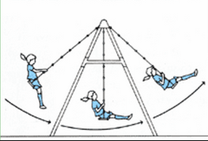
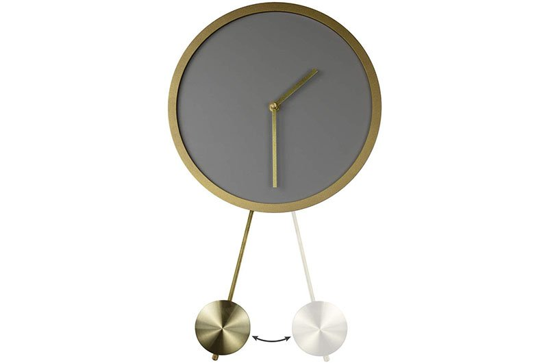
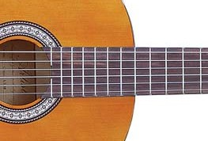

Ruch harmoniczny
Ruch harmoniczny, ruch drgający, drganie, oscylacja - jest to ruch zachodzący wokół stałego położenia równowagi.
Ruch taki może być okresowy (periodyczny), czyli taki, w którym stan ciała powtarza się w jednakowych odstępach czasu, nazywanych okresem drgań.
Przykłady ruchu harmonicznego:
-

Ruch huśtawki
Wyprowadzona z położenia równowagi huśtawka porusza się ruchem harmonicznym
-

Ruch wahadła zegara
Z punktu widzenia fizyki wahadło stanowi realizację oscylatora harmonicznego wymuszonego tłumionego.
-

Drgania strun
Trącona struna wykonuje drgania wokół położenia równowagi
W celu matematycznego opisania ruch harmonicznego naleleży wprowadzić pojęcie okresu drgań. W ten sposób określamy czas trwania jednego pełnego drgania.
Okres oznaczamy literą T i mierzymy w sekundach.
Zależność położenia punktu materialnego na osi x w chwili t możemy oznaczyć przez:
x(t)=x(t+T)
Powyższy zapis oznacza, że położenie punktu w chwili t = t0 i t=t0+T jest takie samo (T jest okresem drgań), czyli powtarza się co pewien czas równy T.
Drgania opisane poniższym równaniem zależności położenia punktu materialnego x od czasu t nazywamy draniami harmonicznymi.
x = Acos(ωt+φ)
lubx = Asin(ωt+φs)
gdzie:
- A - amplituda drgań, czyli największe wychylenie z położenia równowagi
- ω - częstotliwość (częstość) kątowa drgań, pulsacja
- ωt+φ - faza drgań, w szczególności dla t=0, faza drgań jest równa φ - faza początkowa. Dla postaci sinusowej φs=φ+π/2.
W ujęciu dynamicznym ruch harmoniczny to ruch, w którym działająca na ciało siła jest proporcjonalna do wychylenia i przeciwnie do niego zwrócona.
Składowa x wektora siły dana jest wzorem:
Fx = -kx
gdzie:
- k - stała sprężystości, zależny od materiału (np. sprężyny)
- ω - składowa x siły działającej na ciało
- x - współrzędna (wychylenie) ciała na osi.
T = 1⁄f = 2π⁄ω
Okres drgań harmonicznych to czas, jaki jest potrzebny do zakończenia jednego pełnego cyklu drgania harmonicznego. Jest on odwrotnością częstości kołowej oznaczanej jako f
W ruchu harmonicznym okres drgań jest dany wzorem:
Jesteśmy również w stanie znaleźć prędkość i przyspieszenie w ruchu harmonicznym.
Wzór na prędkość w ruchu harmonicznym:
v = -Aωsin(ωt+φ)
Wzór na przyspieszenie w ruchu harmonicznym:
a = -Aω2cos(ωt+φ)
Prezentowana wcześniej symulacja ruchu harmonicznego z możliwością wyboru amplitudy oraz okresu:
Symulacja ukazująca analogię pomiędzy drganiami harmonicznymi a ruchem po okręgu
Symulacja ukazująca ruch klocka na sprężynie
Projekt 1. Strona WWW w języku HTML5 z wykorzystaniem skryptów JavaScript
Wykonał Paweł Sipko 400517, WFiIS, Informatyka Stosowana
Źródła części merytorycznej:
- Wikipedia - okres
- edukator - ruch drgający harmoniczny
- medianauka - ruch harmoniczny
- Wikipedia - ruch harmoniczny
Projekt podlegał testowaniu pod przeglądarką Google Chrome oraz Firefox